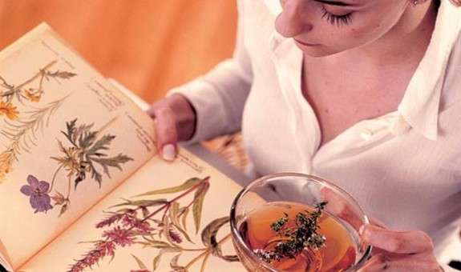
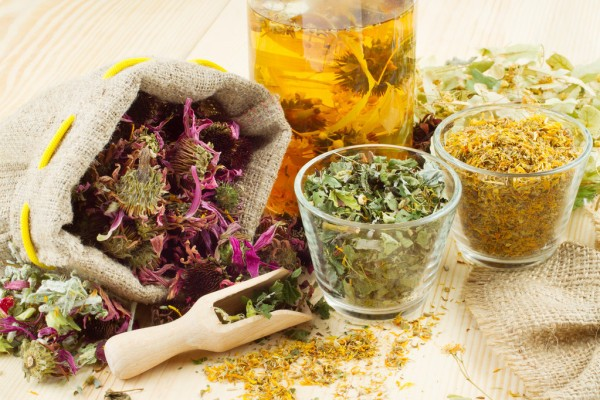

Наша мета
Наша мета - не просто продавати чаї та мазі, але й надати вам засоби для збереження здоров'я та гармонії у вашому житті. Ми віримо, що природа має надзвичайну силу лікувати, і ми хочемо допомогти вам відкрити її.
Розкрийте двері до світу чаю та лікувальних мазей разом з нами. Приєднуйтесь до нашої спільноти, де ми поділимося з вами знаннями, порадами та вдихнемо краплинку тепла у ваше щоденне життя. Дозвольте природі доглянути за вами, а ми піклуватимемося про ваше здоров'я з любов'ю та турботою.

Наша робота
У нас в компанії ми занурені в світ природних трав'яних чаїв та лікувальних мазей з великою пристрастю і зобов'язанням. Наша робота - це не просто бізнес, це наше покликання і спосіб допомогти людям знайти здоров'я, заспокоєння та збалансованість у своєму житті.
Ми починаємо з дбайливого відбору найкращих природних інгредієнтів для наших продуктів. Наша команда спеціалістів, які мають глибокі знання про трави та їх властивості, ретельно вивчає і добирає тільки найякісніші трави, які мають потужні лікувальні властивості. Ми працюємо тільки з надійними постачальниками, які поділяють нашу відданість якості та збереженню природи.
Наступним кроком у нашій роботі є процес збирання і обробки трав. Ми ретельно контролюємо кожен етап, починаючи від збору трави в оптимальний час, коли її лікувальні властивості найсильніші, до використання штучних добрив та хімічних обробників. Ми використовуємо натуральні методи сушіння трави, щоб зберегти її максимальну силу і аромат.
Коли трави готові, наша команда експертів починає створення наших унікальних рецептур. Ми поєднуємо різні трави в пропорціях, які максимально підсилюють їхні лікувальні властивості та створюють неперевершений смак. Кожна наша чашка чаю - це майстерність і любов, яку ми вкладаємо у кожен ковток.
Наша робота також включає розробку та виробництво лікувальних мазей. Ми використовуємо натуральні інгредієнти, такі як ефірні олії, трав'яні екстракти та масла, щоб створити мазі, які допомагають зняти біль, зменшити запалення та сприяють швидшому зціленню. Ми використовуємо сучасні технології і найвищі стандарти, щоб забезпечити безпеку і ефективність кожного продукту.

Наша історія
Загубившись серед життєвих стрімків, ми часто шукаємо шлях до внутрішнього спокою та гармонії. І коли знаходимо його, все, що нам потрібно, це просто ковток від цього магічного еліксиру - чаю трав'яного. Ласкаво запрошуємо вас до нашого онлайн-магазину, де кожна чашка чаю створена з любов'ю та з прагненням до вашої благополучності.
Наша історія починається десятиліття тому, коли наш засновник, Джеймс, сам шукав втому полегшення в природних засобах. Він випадково відкрив потужну силу трав'яних чаїв та мазей, які допомогли йому покращити своє здоров'я і знайти душевний спокій. Це було відкриттям, яке визначило його життя і стало фундаментом нашої компанії.
Зараз наша команда працює з натхненням та пристрастю, щоб принести вам найвищу якість трав'яних продуктів. Ми маємо величезний вибір трав'яних чаїв, які вибираються зі знанням та дбайливістю про їх лікувальні властивості. Від втішного і заспокійливого лавандового чаю до освіжаючого м'яти та цитрусових сумішей - у нас є чай для кожного настрою і смаку.
Але наше прагнення до здоров'я не зупиняється на чаїв. Ми також пропонуємо вам мазі, створені з унікальних рецептур, що поєднують потужність природних інгредієнтів. Від заспокоюючих змішувань для зняття м'язових напруг до регенеруючих мазей для шкіри - наші лікувальні мазі приводять вас до оздоровлення та природного омолодження.
Ми розуміємо, що ваше здоров'я і благополуччя є найважливішими, тому ми присвячуємо час та зусилля, щоб забезпечити вам найкращі продукти. Наша команда експертів ретельно вибирає та перевіряє кожен інгредієнт, щоб ви отримали тільки найвищу якість.